Galería e Instalaciones de Tenis de Mesa en Alcoy
Instalaciones de alta competición y entrenamiento del CTM Alcoy en el Polideportivo Municipal Francisco Laporta.
Nuestra sede se encuentra ubicada en el Polideportivo Municipal Francisco Laporta de Alcoy (Alcoi). Contamos con un espacio deportivo equipado con material técnico de primera calidad para la práctica recreativa, la escuela formativa y la alta competición federada:
🏓 Más de 7 Pistas y Mesas Profesionales
Capacidad para montar simultáneamente más de 7 pistas completas de juego con mesas profesionales de diversas marcas de referencia y homologación oficial ITTF para distintos niveles de competición.
🏃 Suelo Acolchado de Alta Competición
Pavimento sintético especial acolchado y antideslizante, preparado para absorción de impactos, óptimo agarre en deslazamientos y máxima seguridad articular en desplazamientos rápidos.
🤖 Robot y Perfeccionamiento de Saques
Robot lanzapelotas automático para trabajo técnico intensivo, zona específica de perfeccionamiento de saques y recepción, junto con cajas de pelotas para entrenamientos de repetición.
🛡️ Vallas Perimetrales y Redes Oficiales
Vallas perimetrales homologadas para independencia total entre áreas de juego y seguridad del jugador, acompañadas de conjuntos de redes oficiales reglamentarias.
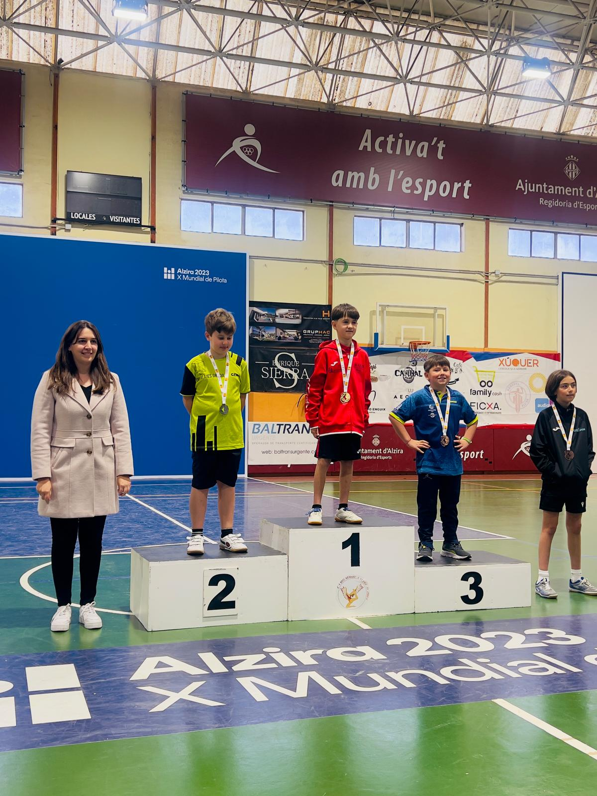
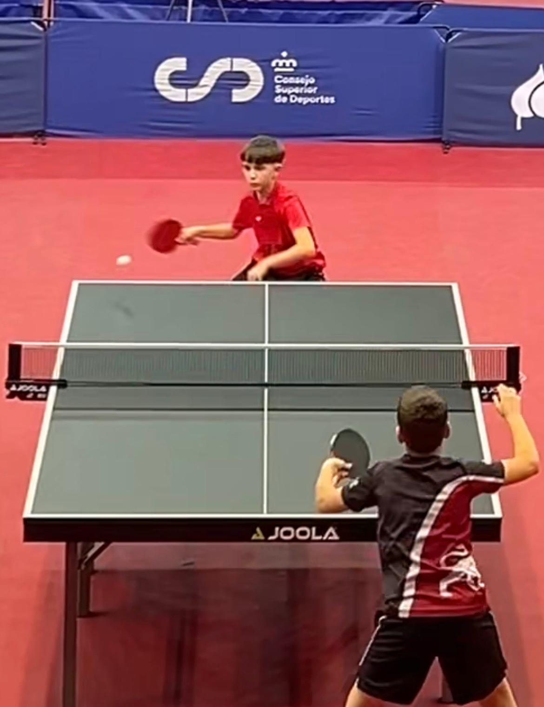
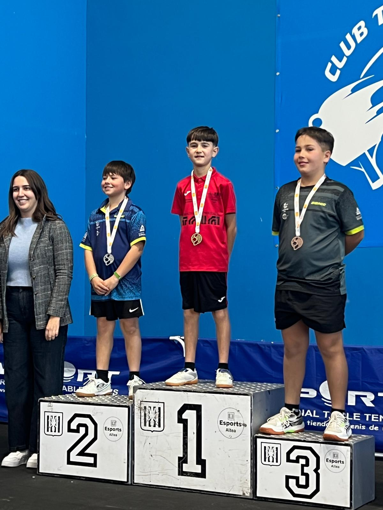
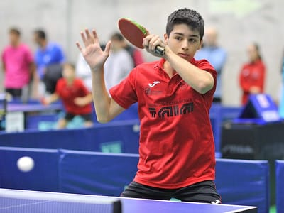
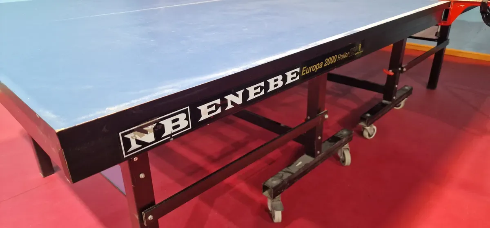
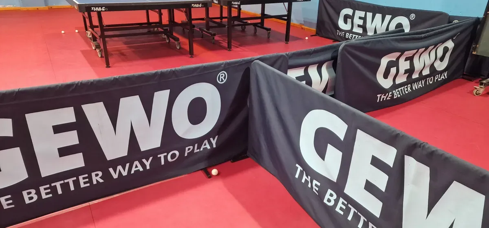
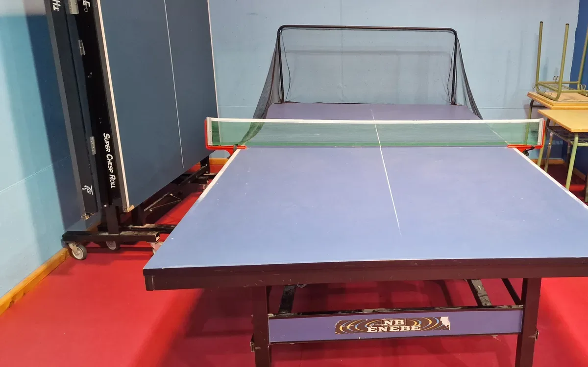
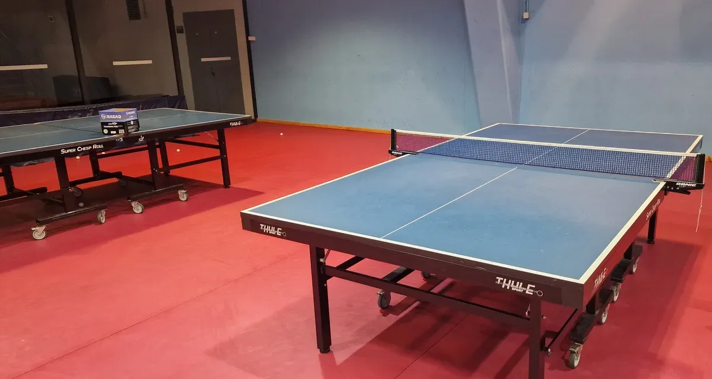
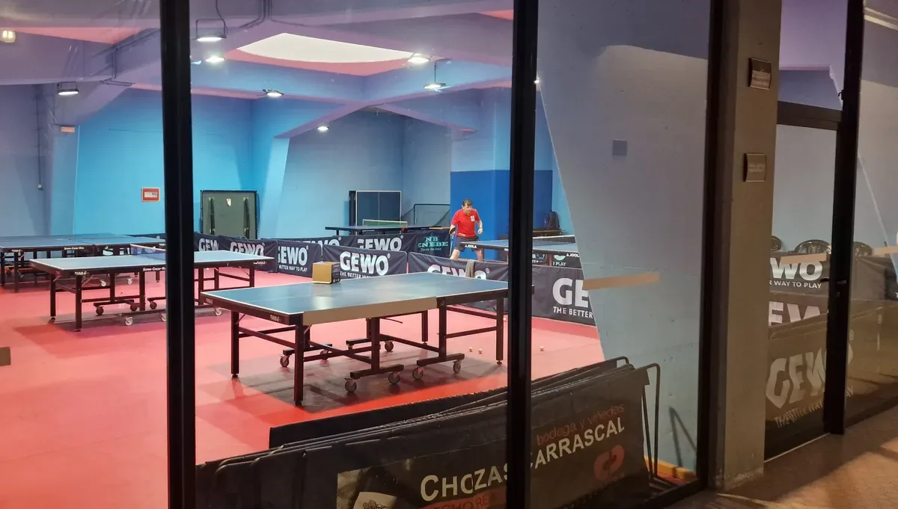
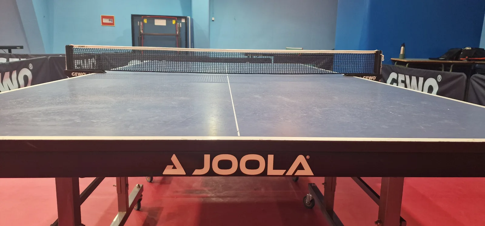
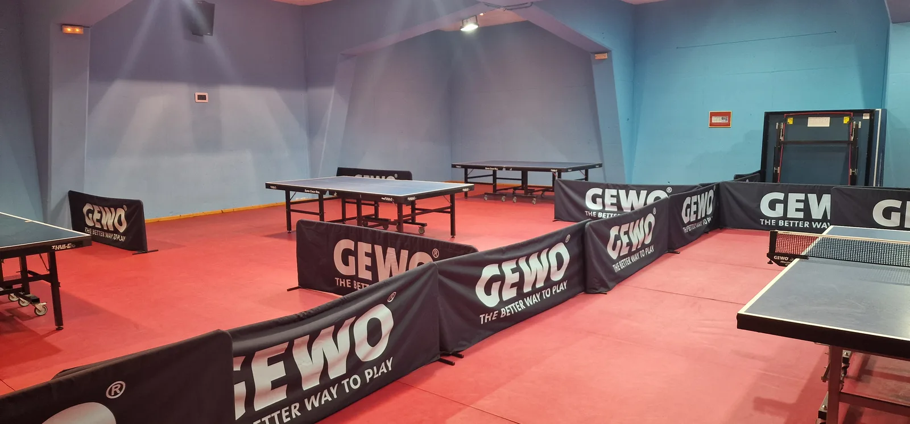
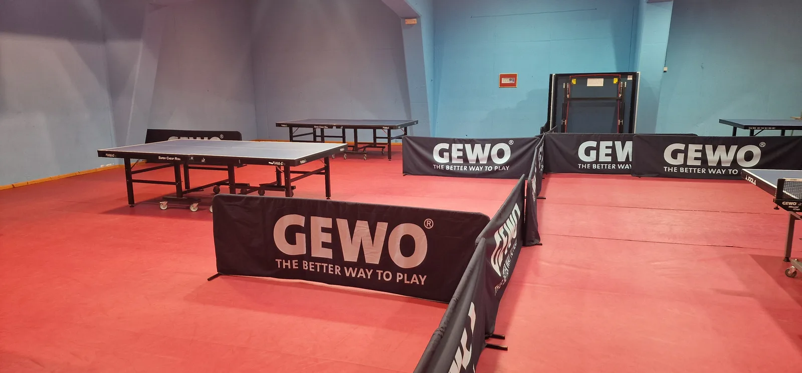
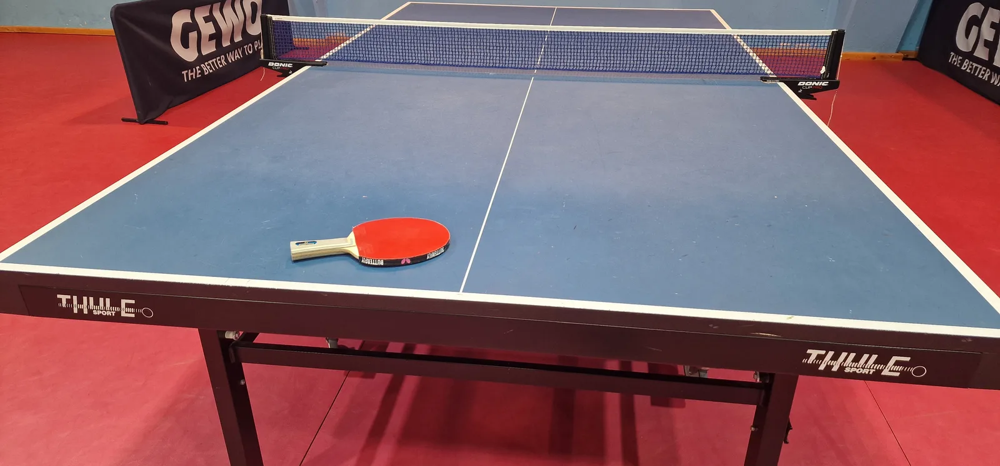
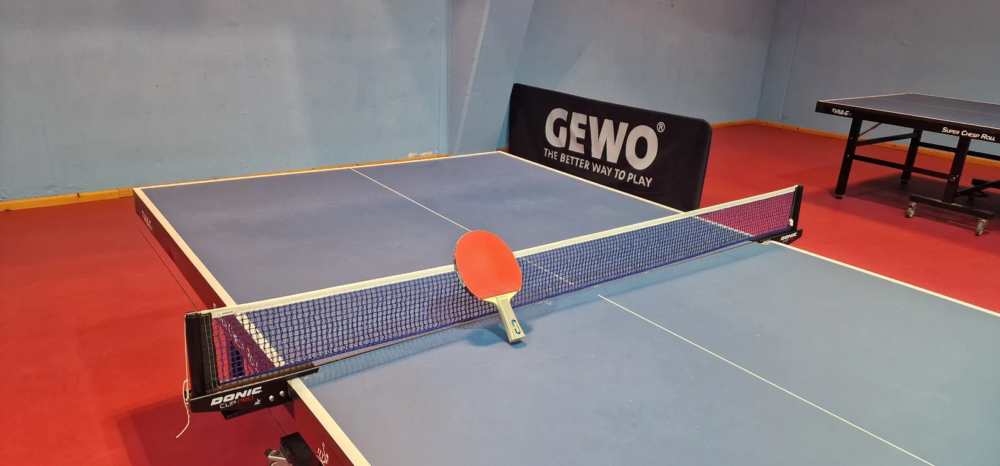
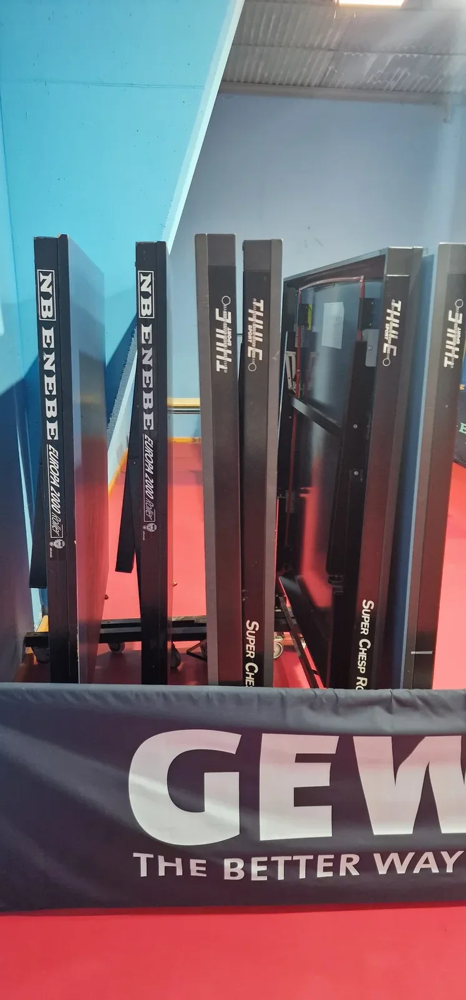
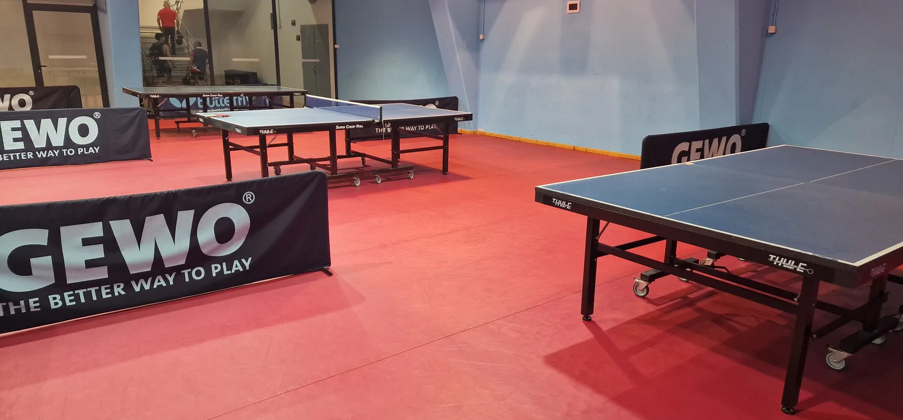
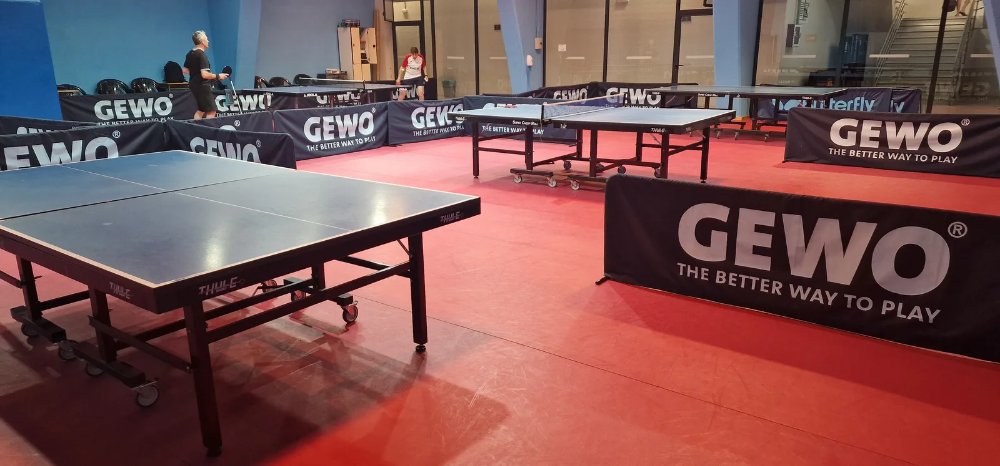
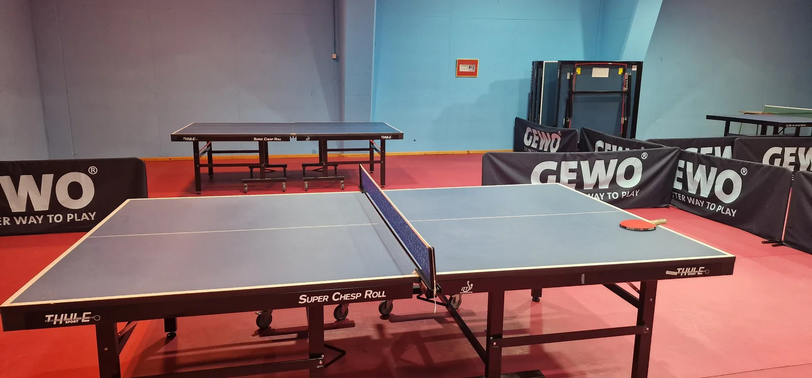